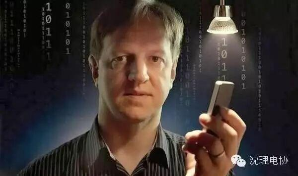
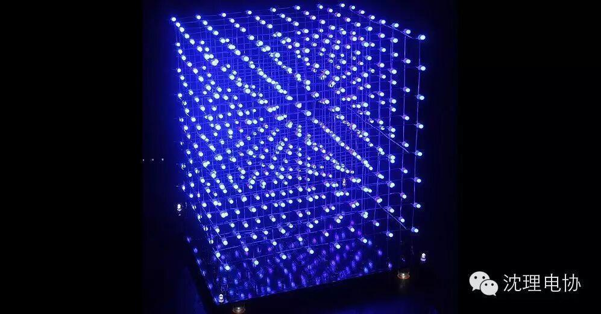

科技前沿：LiFi会是WIFI的最终杀手？
随着LED正逐渐在家用照明领域普及，它们也帮助打开了一条使移动设备与互联网进行连接的道路，而且还具有比WiFi带宽更大、速度更快的应用潜力。至少爱丁堡大学的移动通信研究所主席Harald Haas等研究者是这样期望的。
梦幻般的光：爱丁堡大学开发的一款CMOS数模转换器，它能够将LED灯用作通信装置。
“所有的组件和运行机制都已经有了，”Haas说道，“现在需要做的就是将它们组装起来就可以用了。”
Haas的研究小组与来自剑桥大学、牛津大学、圣安德鲁斯大学以及斯特拉斯克莱德大学的研究者正处在由英国工程和物理科学研究理事会赞助的580万英镑的四年研究计划的中间阶段。他们的研究目标是“超并行可见光通信”，它能在几米的范围内用多种颜色的光提供高带宽的连接。这样的LiFi系统能在某些情况下替代或补充基于无线电波的WiFi系统，他们这样说道。但考虑到WiFi使用如此广泛，这场战斗恐会不易。
在今年10月的IEEE光子学会议上，这个联合研究小组的成员展示了他们的研究进展。比如：这个团队使用市面上可见到红光、绿光与蓝光LED同时作为发射器和探测器，他们制造了一个能够同时以110Mb/s的速度接收和发射数据的系统；而当其进行单向传递数据时，速度能达到155
Mb/s。
但Haas说其应用前景受制于目前已经存在的LED以及LED同时作为发射器和接收器的应用。但这个研究小组已经制造一种更好的LED，它能够提供接近4Gb/s的速度，而其运行的功率只有5毫瓦，当然在其接收端也使用了更好的光接收电极。再通过使用一个简单的透镜以增加使用范围，在10米范围内的速度能达到1.1
Gb/s，此后该速度又增加到15 Gb/s，Haas说。802.11ad Wi-Fi标准在60GHz时带宽最高也只能达到7
Gb/s，也就是说LiFi的速度能达到WiFi的两倍以上。

他们使用了雪崩光电二极管来作为更好的光电接收器。在光电二极管中，到达接受极的单个光子能够激发大量的电子，从而放大输入信号。LiFi研究和设计中心的Haas团队通过在CMOS上集成雪崩光电二极管而制成了第一个LiFi接受芯片。那块7.8平方毫米的IC上集成了49个光电二极管。
另外，德国德累斯顿的弗劳恩霍夫光微电子研究所曾在11月宣布计划在2015年慕尼黑电子展上部署LiFi热点。研究所的团队领导人Frank
Deicke说，该系统将最有可能使用红外光，并且针对工业用户，而不是普通消费者。热点将是具有高达1Gb/s速度的点对点线路。
“你能获得和USB线缆相同的速度，”Deicke说，“那对大部分无线技术来说都是一个严峻的挑战，就像WiFi和蓝牙。”另外的好处是。Deicke还说，是WiFi的响应时间是毫秒量级的，而LiFi的响应时间是在微秒量级。在工业应用中，数据将在传感器、执行装置和控制单元之间流动。低的响应时间和高的数据率能使得LiFi在某些WiFi不能涉足的工业领域发挥重要作用。“我们并非是要取代WiFi，”他还说，“那不是我们的目标。”
Deicke认为LiFi会成为已经存在的通信技术（包括WiFi和千兆级以太网）的补充。到目前为止，他的团队还没将关注重心放到将其与普通光源的结合上来。
但另一些欧洲的学术研究人员和网络公司的目标是消费者市场。该小组正在进行一个名为“高级融合和易于管理的创新网络设计（ACEMIND）”的项目，该项目的目的是开发管理家庭和小型企业的本地网的方法。ACEMIND包括一些测试不同技术的示范项目，其中也包括LiFi。雅典大学的Dmitris
Katsianis是ACEMIND的参与者，他认为LiFi可能未来五年之内能得以实用化。“LiFi有很多优点，使其在电磁敏感的领域非常有用，例如医院、飞机客舱和电厂。”他说。
Haas仍期待着更大的市场。他预计LED的将不仅仅作为光源发展，就像手机从通信设备发展成为移动的计算机一样。“25年之内，你房子里面的每一个灯泡都将拥有你现在手机这样的信号处理能力，”他说，“照明只是它众多功能中的一个而已。”
